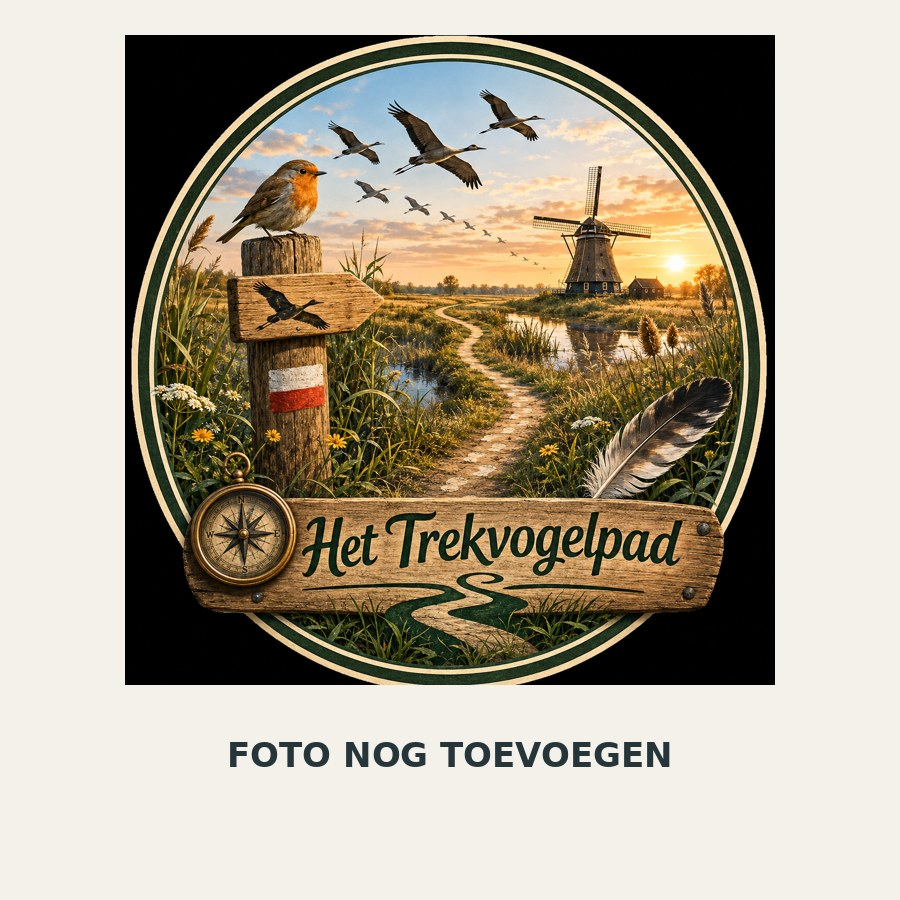

Grebbeberg

Mijn verhaal
De Grebbeberg is niet alleen een hoogte in het landschap, maar ook een strategische plek. De steile hellingen boven de Nederrijn geven uitzicht over de rivier en de Betuwe en maakten de heuvel door de eeuwen heen militair interessant. Tijdens de Duitse inval van mei 1940 werd hier zwaar gevochten. In de omgeving herinneren het militaire ereveld en andere verdedigingswerken aan die strijd. Tegelijk is het gebied nu onderdeel van een bijzonder natuur- en rivierlandschap. Kijk vanaf de helling naar het open land: juist dat uitzicht helpt begrijpen waarom deze plek militair zo belangrijk was. De Grebbeberg sluit tegenwoordig aan op het natuurgebied Blauwe Kamer, waar onder meer Konikpaarden en Gallowayrunderen voorkomen.
Geschatte locatie
Let op: dit adres en deze coördinaten zijn een geschat uitgangspunt, bedoeld om de locatie in de app alvast te positioneren. Controleer ze later aan de hand van de exacte route/locatie.
Geschat: Grebbeberg, Rhenen · 51.957500, 5.586000
Standaard gegevens
| Bouwjaar / periode | n.v.t.; natuurlijke stuwwal |
|---|---|
| Door wie / ontstaan | militaire verdediging, o.a. Grebbelinie en strijd 1940 |
| Huidige functie / status | natuurgebied en militair-historisch landschap |
| Onderzoeksstatus | Oorlogsgeschiedenis kan verder met primaire bronnen worden uitgewerkt. |